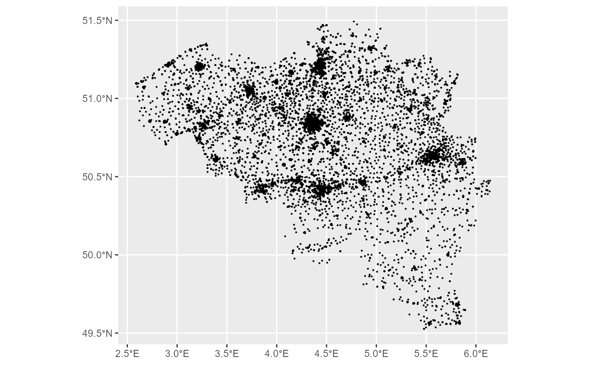

This dataset is an integration of Member States official data on the location of education services. Additional information on these services is included when available (see Details).
Usage
gisco_get_education(
year = c(2023, 2020),
cache = TRUE,
update_cache = FALSE,
cache_dir = NULL,
verbose = FALSE,
country = NULL
)Source
https://ec.europa.eu/eurostat/web/gisco/geodata/basic-services.
There are no specific download rules for the datasets shown below. However, please refer to the general copyright notice and licence provisions, which must be complied with. Permission to download and use these data are subject to these rules being accepted.
The data are extracted from official national registers. They may contain inconsistencies, inaccuracies and gaps, due to the heterogeneity of the input national data.
Arguments
- year
character string or number. Release year of the file. One of
2023,2020.- cache
logical. Whether to do caching. Default is
TRUE. See Caching strategies section ingisco_set_cache_dir().- update_cache
logical. Should the cached file be refreshed? Default is
FALSE. When set toTRUEit would force a new download.- cache_dir
character string. A path to a cache directory. See Caching strategies section in
gisco_set_cache_dir().- verbose
logical. If
TRUEdisplays informational messages.- country
character vector of country codes. It could be either a vector of country names, a vector of ISO3 country codes or a vector of Eurostat country codes. See also
countrycode::countrycode().
Value
A sf object.
Details
Files are distributed on EPSG:4326.
Brief description of each attribute:
| Attribute | Description |
id | The education service identifier. This identifier is based on national identification codes, if it exists. |
name | The name of the education institution. |
site_name | The name of the specific site or branch of an education institution. |
lat | Latitude (WGS 84). |
lon | Longitude (WGS 84). |
street | Street name. |
house_number | House number. |
postcode | Postcode. |
address | Address information when the different components of the address are not separated in the source. |
city | City name (sometimes refers to a region or municipality). |
cntr_id | Country code (2 letters, ISO 3166-1 alpha-2). |
levels | Education levels represented by a single integer or range (ISCED 2011). |
max_students | Measure of capacity by maximum number of students. |
enrollment | Measure of capacity by number of enrolled students. |
fields | Academic disciplines the institution specializes in (ISCED-F 2013). |
facility_type | Type of institution in reference to ownership and operation e.g. Catholic, International, etc. |
public_private | The public or private status of the education service. |
tel | Telephone number. |
email | Email address. |
url | URL link to the institution's website. |
ref_date | The reference date (DD/MM/YYYY) the data refers to. The dataset represents the reality as it was at this date. |
geo_qual | Geolocation quality indicator: 1=Good, 2=Medium, 3=Low, 4=From source, -1=Unknown, -2=Not geocoded. |
comments | Some additional information on the education service. |
See also
Other basic services datasets:
gisco_get_healthcare()
Examples
# \donttest{
edu_austria <- gisco_get_education(country = "Austria", year = 2023)
# Plot if downloaded
if (!is.null(edu_austria)) {
austria_nuts3 <- gisco_get_nuts(country = "Austria", nuts_level = 3)
library(ggplot2)
ggplot(austria_nuts3) +
geom_sf(fill = "grey10", color = "grey60") +
geom_sf(
data = edu_austria, aes(color = rev(public_private)),
alpha = 0.25
) +
theme_void() +
theme(
plot.background = element_rect(fill = "black"),
text = element_text(color = "white"),
panel.grid = element_blank(),
plot.title = element_text(face = "bold", hjust = 0.5),
plot.subtitle = element_text(face = "italic", hjust = 0.5)
) +
labs(
title = "Education", subtitle = "Austria (2023)",
caption = "Source: Eurostat, Education 2023 dataset.",
color = "Type"
) +
coord_sf(crs = 3035)
}

# }